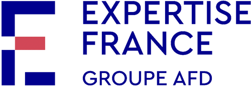
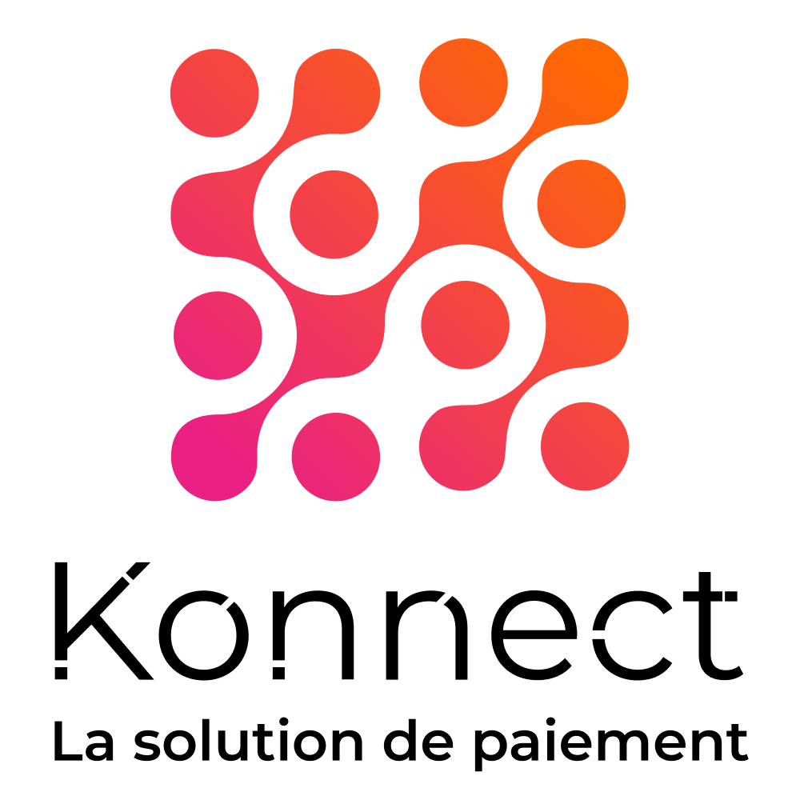
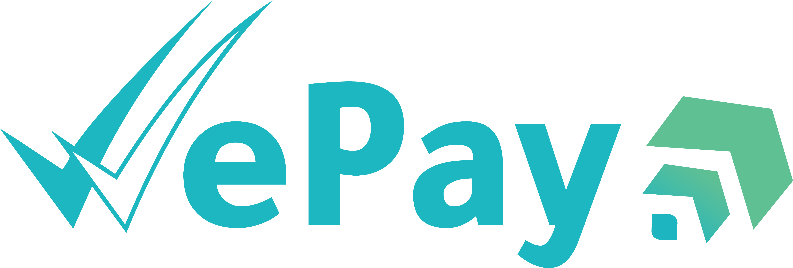

Nous accompagnons institutions financières, grands groupes et entreprises en croissance de l'ambition stratégique jusqu'à son exécution sur le terrain.
HORAMA est un cabinet de conseil en stratégie engagé aux côtés des organisations publiques et privées pour concevoir et mettre en œuvre des stratégies agiles, responsables et génératrices de valeur durable.
Nous intervenons à l'échelle nationale et régionale, auprès d'une clientèle diversifiée : startups, TPME, grands groupes, institutions financières, banques, ONG et institutions publiques.
Notre approche combine rigueur analytique, intelligence contextuelle et orientation résultats, pour transformer les défis complexes en leviers de croissance concrets.
La performance durable ne s'improvise pas ; elle se conçoit, se structure et s'accompagne.
Dans un environnement en forte mutation — accélération digitale, pression ESG, montée des TPME innovantes, réformes institutionnelles — les organisations ont besoin d'un partenaire qui combine vision stratégique et capacité d'exécution.
Nous co-construisons les solutions avec nos clients, pas pour eux. Chaque recommandation est validée sur le terrain avant d'être formalisée.
Nos livrables répondent aux standards des meilleures pratiques internationales — rigueur analytique et qualité d'exécution.
Chaque mission est mesurée à l'aune de ses résultats tangibles, pas de la qualité de sa présentation.
À travers une compréhension fine des marchés africains, nous concevons des stratégies solides, adaptées aux réalités locales et alignées sur les meilleures pratiques internationales.
Adapter nos approches aux contextes instables et aux organisations en mouvement rapide.
Chaque recommandation intègre une dimension ESG, éthique et d'impact durable.
Nos clients sont acteurs de leur transformation, pas de simples destinataires.
Rigueur analytique, livrables de haute qualité, engagement de résultats mesurables.
Nous formulons des recommandations exigeantes, même quand elles remettent en cause le statu quo.
Analyse, diagnostic et formulation stratégique. Comprendre en profondeur le contexte, les parties prenantes et les enjeux réels.
Architecture des solutions et des plans de transformation. Co-construction des feuilles de route et des modèles d'affaires.
Implémentation, conduite du changement et pilotage. Accompagnement à l'exécution et mesure continue des résultats.
Chaque mission mobilise un ou plusieurs de ces expertises selon la maturité de l'organisation.
Redéfinir le cap stratégique et l'architecture qui le rend possible.
Identifier et activer les leviers de croissance des entreprises en développement.
Segmentation, catalogue, animation commerciale, Next Best Product, automatisation.
Intégrer la dimension ESG au cœur de la stratégie et des opérations.
Aligner le parcours client et le positionnement de marque sur la promesse de valeur.
RH, communication, processus. Piloter la transformation jusqu'à son adoption réelle.
Nous accompagnons les acteurs financiers dans un environnement en constante évolution.
Nous activons les leviers de croissance des entreprises à chaque étape clé.
Nous concevons des solutions digitales performantes, innovantes et durables.
Nous intégrons les enjeux ESG et climatiques au cœur des stratégies et des opérations.
Nous accompagnons la transformation des industries vers plus de compétitivité et de résilience.
Nous conseillons les organisations publiques pour renforcer leur impact et leur efficacité.


